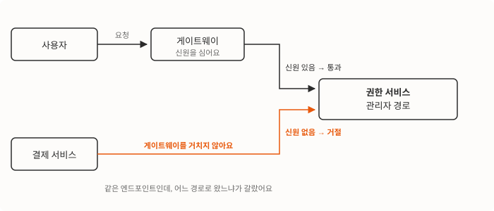

관리자용 API에 “신원 없으면 무조건 거절”을 걸었어요. 보안 릴리스의 핵심이었고, 배포는 조용히 끝났죠. 그런데 그 배포 이후 완료된 결제 여섯 건이, 돈은 빠져나갔는데 수강권한은 부여되지 않은 상태로 남아 있었어요.
원인은 한 줄로 요약돼요. 서버가 서버를 부르는 호출에는 게이트웨이가 심어주는 신원이 없어요. 그런데 그 호출들이 관리자 경로를 쓰고 있었고요.
이 글은 그 사고를 어떻게 잡았는지, 그리고 “엔드포인트 하나 고치기”에서 멈추지 않고 서버간 호출 규약 자체를 다시 세우기까지의 이야기예요. 마지막에는 그렇게 만든 경로가 곧바로 새로운 위험이 됐던 이야기도 있어요.
출발선에는 신원을 심어주는 게이트웨이가 있었어요
우리 API는 앞단에 게이트웨이를 두고, 그 뒤에 도메인별 서비스가 늘어서 있어요. 게이트웨이가 로그인 세션을 확인하고 사용자 식별자를 헤더에 심어서 뒤로 넘기죠. 각 서비스는 그 헤더를 보고 “누가 부른 요청인지”를 알아요.
경로는 성격에 따라 나뉘어 있었어요.
| 경로 | 부르는 쪽 | 게이트웨이를 거치나요 |
|---|---|---|
| 회원용 | 로그인한 사용자 | 거쳐요. 신원이 심어져요 |
| 관리자용 | 백오피스를 쓰는 관리자 | 거쳐요. 신원이 심어져요 |
| 내부용 | 다른 서비스의 서버 | 안 거쳐요. 외부에 열려 있지도 않고요 |
이 표가 깔끔한 건 문서 위에서였어요. 실제로는 서버끼리 부르는 호출 상당수가 관리자용 경로를 쓰고 있었어요. 관리자용에는 원하는 기능이 이미 다 있었고, 그때까지는 신원 헤더가 없어도 아무도 막지 않았거든요. 동작하니까 관례가 됐고, 관례라서 아무도 다시 보지 않았죠.
인증을 켜자 조용하던 관례가 터졌어요
보안 감사의 결론 중 하나가 “관리자 경로는 신원 없으면 거절”이었어요. 있으면 통과, 없으면 거절. 판단이 안 서면 막는 쪽으로 기울인다는 뜻이라, 흔히 fail-closed라고 불러요. 이걸 켠 게 오후였어요.
알림은 울리지 않았어요. 결제 자체는 정상이었으니까요. 카드가 승인되고, 결제 서비스가 완료 처리를 해요. 그다음 수강권한을 부여하려고 권한 서비스를 부르는데, 이때 쓰는 게 관리자 경로였어요. 여기서 거절당했어요. 그 호출은 게이트웨이를 거친 적이 없어서 심어줄 신원이 애초에 없었거든요.

거절 응답을 받은 결제 완료 처리는 예외로 종료됐고, 결제는 이미 성립한 뒤였어요. 돈은 받았는데 강의는 못 듣는 상태가 만들어진 거죠.
운영 환경에서 바로 확인해봤어요. 신원 헤더 없이 부르면 거절, 붙여서 부르면 정상. 재현은 그걸로 끝이었어요.
피해 범위를 셌어요. 배포 시각 이후 완료된 결제 여섯 건 중 권한이 나간 건 하나도 없었어요. 유료 세 건, 무료 세 건이었고요.
다른 서비스에서는 원인이 엉뚱한 이름으로 보였어요
같은 원인인데 증상이 전혀 달라 보이는 곳도 있었어요. 진도 조회 API가 실패하고 있었는데, 로그에 찍힌 건 거절 응답이 아니라 엉뚱한 키를 찾다 난 오류였어요.
응답 상태를 확인하는 공통 함수가 문제였어요. 실패 응답에서 메시지 필드를 꺼내 예외로 감싸는 코드였는데, 게이트웨이가 돌려준 거절 응답에는 그 필드가 없었어요. 필드를 꺼내려다 난 오류가 원래 오류를 덮어버린 거죠. 거절당했다는 사실이 “찾는 값이 없다”로 둔갑해서 나오고 있었어요.
그래서 이 함수부터 고쳤어요. 상태 코드와 응답 본문을 그대로 실어서 원인이 보이게 했고요.
인증을 되돌리는 대신 경로를 새로 내기로 했어요
가장 빠른 복구는 방금 켠 인증을 끄는 거였어요. 실제로 이번 릴리스에서 그렇게 처리한 곳이 하나 있긴 했고요 — 로그인 엔드포인트예요. 로그인은 게이트웨이가 신원을 확인하기 이전 단계라 신원이 있을 수가 없어요. 자체적으로 문자 토큰과 PIN으로 검증하고요. 여기는 예외 처리가 맞았어요.
하지만 수강권한 부여는 성격이 달랐어요. 이건 신원이 없을 수 없는 경로가 아니라, 부르는 쪽이 잘못된 경로로 들어오고 있던 호출이었거든요. 인증을 끄면 관리자 경로가 다시 누구에게나 열려요. 방금 그걸 막으려고 릴리스를 한 건데요.
그래서 반대로 갔어요. 관리자 경로의 인증은 손대지 않고, 서버간 호출이 쓸 경로를 따로 만들어요. 내부용에 같은 기능의 엔드포인트를 새로 두고, 부르는 쪽이 주소만 바꿔 타게 하는 거죠.
핵심은 새 엔드포인트가 관리자용과 같은 내부 로직을 그대로 호출한다는 점이었어요. 응답 형태가 같아야 부르는 쪽이 주소 한 줄만 바꾸면 되니까요. 로직을 새로 쓰면 그 순간부터 두 벌이 갈라지기 시작하고, 갈라진 쪽에 또 인증 구멍이 생겨요.
회귀 테스트도 양쪽으로 걸었어요. 내부용에는 신원 검사가 없어야 하고, 관리자용은 계속 요구해야 한다는 두 가지를요. 이러면 나중에 누가 무심코 되돌릴 때 테스트가 먼저 알려줘요.
권한 서비스에 경로를 내고 결제 서비스가 그리로 갈아타기까지, 두 개의 긴급 배포가 2분 간격으로 나갔어요.
진짜 문제는 엔드포인트 하나가 아니었어요
여기서 멈췄으면 얼마 못 가 똑같은 사고가 다른 서비스에서 났을 거예요. 이 엔드포인트만 엉뚱한 경로로 들어오고 있었을 리가 없거든요.
그래서 서버끼리 부르는 호출을 전부 훑었어요. 각 서비스에서 다른 서비스를 호출하는 코드를 모아놓고, 어느 경로를 쓰는지 하나씩 봤죠. 예상대로 관리자 경로가 줄줄이 나왔어요. 강의 구조 조회, 강의 목록, 지원서 조회, 퀴즈와 프로젝트 진행 상황… 대부분 “관리자용에 이미 있으니까” 그대로 쓴 것들이었어요. 받는 쪽에 대응 엔드포인트가 아예 없어서 새로 만들어야 했던 것도 있었고요.
같은 날 일곱 개 서비스를 한꺼번에 옮겼어요. 옮기는 일 자체는 단순해요. 부르는 쪽이 있으면 받는 쪽에 대응 엔드포인트를 만들고, 주소를 바꾸고, 테스트를 달아요. 어려운 건 빠뜨리지 않는 거예요.
옮기다 보니 부르는 사람이 없는 코드가 나왔어요
훑으면서 예상 못 한 소득이 있었어요. 권한 서비스를 호출하는 함수 목록을 놓고 하나씩 호출처를 찾는데, 몇 개는 검색 결과가 비어 있었어요. 환불 정보 조회, 수강 만료 처리, 수강생 목록 조회 같은 것들이요. 예전엔 썼는데 화면이 바뀌면서 호출처만 사라지고 함수는 남아 있던 거죠.
이런 코드는 그냥 지저분한 정도가 아니에요. 남겨두면 다음 사람이 그걸 가져다 쓰면서, 방금 고친 것과 똑같은 거절을 다시 밟거든요. 그래서 옮기는 김에 지웠어요.
일부러 안 옮긴 것도 있어요
미뤄둔 것도 있었어요. 결제 상세 화면에 표시하려고 권한 정보를 조회하는 호출이 하나 있었는데, 이것도 거절당하는 상태였어요. 다만 실패하면 빈 값으로 넘어가게 감싸여 있어서 화면이 깨지지 않았고, 받는 쪽에 대응 엔드포인트도 아직 없었어요. 장애 경로가 아니라 판단하고 긴급 배포 범위에서 뺐어요. 이런 건 커밋에 “왜 안 넣었는지”를 적어두는 게 중요해요. 안 그러면 다음 사람이 빠뜨린 걸로 알고 놀라거든요.
경로를 넓혔더니 새 구멍이 생겼어요
여기가 이번 작업에서 가장 뜨끔했던 지점이에요.
내부용 경로에는 신원 검사가 없어요. 게이트웨이를 거치지 않는 호출을 받으려고 만든 경로니까요. 클러스터 바깥에 노출되지 않는다는 전제가 그 안전을 받치고 있고요.
그런데 그 전제 아래에서 우리는 방금 이 경로를 크게 넓혔어요. 그리고 넓힌 엔드포인트 중에 지원서 목록 조회가 있었어요.
이 엔드포인트는 강의 범위를 좁히지 않고 전체 지원서를 훑을 수 있는 경로였어요. 그런데 응답에 지원서 본문이 그대로 실려 있었죠. 실명, 전화번호, 이메일 같은 것들이요. 신원 검사가 없는 경로에 그 응답이 붙어 있으면, 전제가 한 번 깨지는 순간 개인정보 대량 수집 창구가 돼요.
부르는 쪽을 확인해보니 식별자만 쓰고 있었어요. 본문은 아무도 안 봤죠. 그래서 같은 도메인의 다른 내부용 엔드포인트가 이미 쓰던 개인정보 제외 응답 모델로 통일하고, 한 번에 가져갈 수 있는 개수에 상한도 걸었어요. 부르는 쪽은 아무것도 안 깨졌고요.
여기서 얻은 규칙이 하나 남았어요. 신원 검사가 없는 경로를 넓힐 때는 그 경로에 실리는 데이터를 같이 봐야 해요. 경로를 넓히는 작업과 응답 모델을 점검하는 작업은 별개의 일처럼 보이지만, 실은 같은 결정의 앞뒷면이거든요.
규약을 코드에 넣어뒀어요
여기까지가 사람이 매번 기억해야 할 일로 남으면 같은 사고는 또 나요. 그래서 규약을 사람 머릿속이 아니라 코드로 옮겼어요.
각 서비스에 인증 커버리지 테스트를 뒀어요. 회원용·관리자용 경로에 새 라우트가 생겼는데 신원 검사가 빠져 있으면 테스트가 실패해요. 규칙을 모르는 사람이 라우트를 추가해도 “무엇을 어디에 붙여야 하는지”를 테스트가 알려주는 구조죠. 내부용 경로와 헬스체크는 검사 대상에서 빠지고요 — 신원 검사가 없는 게 정상인 경로니까요.
의도적 예외 목록도 만들어뒀는데, 원칙적으로 비어 있어야 하는 목록이에요. 여기에 뭘 추가하려면 사유를 주석으로 적어야 하고, 적다 보면 대부분 “예외가 아니라 잘못 부르고 있었다”는 걸 알게 돼요. 이번 사고가 딱 그랬거든요.
새로 만든 내부용 라우터에는 왜 이게 존재하는지를 파일 맨 위에 적어뒀어요. 이 코드를 처음 보는 사람이 “인증이 왜 없지?”라고 물을 게 뻔하니까, 그 자리에서 답이 나오게요.
무엇이 달라졌나
관리자 경로에 인증을 강제한 건 이번 작업의 출발점이지 결과가 아니에요. 표에는 그 뒤에 달라진 것만 적었어요.
| 이전 | 이후 | |
|---|---|---|
| 서버간 호출이 쓰는 경로 | 관리자용을 그냥 썼어요 | 옮긴 곳은 내부용 전용 경로를 써요 |
| 규약의 위치 | 사람 머릿속에 있었어요 | 테스트와 문서에 있어요 |
| 신원 검사 없는 경로의 개인정보 | 응답 모델을 따로 안 봤어요 | 개인정보 제외 모델로 통일했어요 |
| 실패 원인 | 엉뚱한 오류에 가려졌어요 | 상태 코드와 본문이 그대로 보여요 |
트레이드오프도 있어요. 같은 기능의 엔드포인트가 관리자용과 내부용 두 벌로 늘어났어요. 내부 로직을 공유하게 만들어서 로직이 갈라질 위험은 줄였지만, 라우트 정의는 분명히 늘었죠. 그래도 인증 규칙이 서로 다른 두 종류의 호출자가 실제로 있는 이상, 이걸 한 경로에 욱여넣으면 어느 한쪽 규칙이 느슨해져요. 이번 사고가 그 증거였고요.
남은 꼬리는 그다음 주에 정리했어요. 부르는 쪽 없는 코드를 마저 지우고, 전환된 경로에 테스트를 더 붙이고, 왜 이 경로를 쓰는지를 주석으로 남겼어요.
보안 강화가 만든 사고가 아니었어요
돌아보면 이번 사고는 보안 강화가 만든 사고가 아니었어요. 원래부터 잘못돼 있던 걸 인증을 켜면서 비로소 본 거죠. 서버간 호출이 관리자 문으로 들어오고 있었다는 사실은 인증을 켜기 전에도 참이었어요. 다만 아무도 막지 않아서 아무도 몰랐을 뿐이에요.
인증 같은 차단 장치를 켜는 작업이 까다로운 이유가 여기 있어요. 지금까지 통과하던 요청 중에 통과하면 안 됐던 게 섞여 있고, 그게 어느 것인지는 켜봐야 알아요. 그래서 켠 직후에는 로그를 지켜보면서, 걸린 요청을 원인별로 다르게 처리할 준비가 필요했어요. 신원이 있을 수 없는 경로라면 예외 등록이 맞고, 잘못된 경로로 들어오고 있었다면 그 호출이 쓸 경로를 새로 만드는 게 맞고요. 이 구분 없이 걸리는 족족 예외로 등록하면 인증을 켠 의미가 없어져요.
이 원인별 구분은 사고를 다 수습하고 나서야 정리된 기준이고, 지금은 비슷한 차단 장치를 켜기 전에 먼저 세워둬야 할 체크리스트로 남아 있어요.